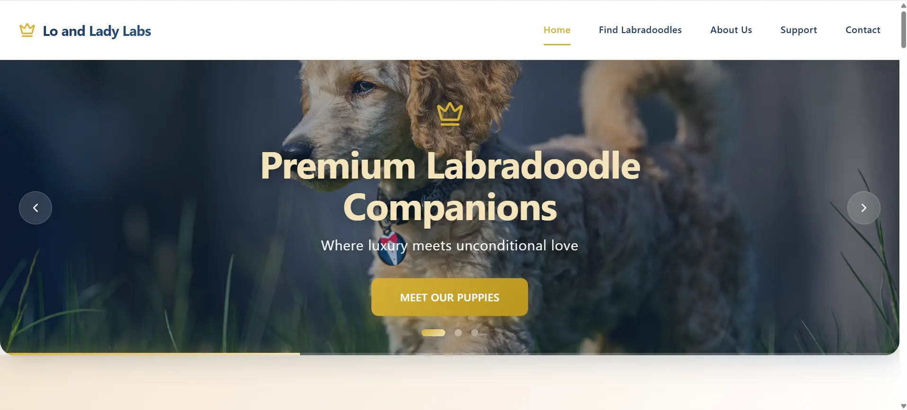
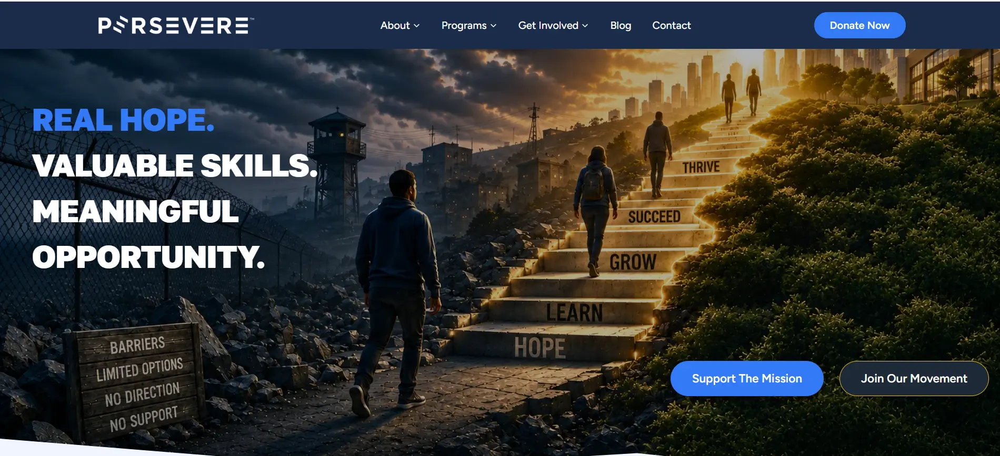

My Projects

Lo and Lady Labs
React-based puppy adoption platform with advanced search and interactive galleries.
React
TypeScript
Firebase

Zodiac Countdown
Birthday countdown with personalized zodiac themes and yearly horoscopes.
JavaScript
HTML
CSS

Rescue Tennessee
Donation platform connecting donors with dog rescue organizations across Tennessee.
React
Next.js

Office Supply Request
Full-stack internal tool for submitting and managing office supply requests — built with Next.js, TypeScript, and Firebase.
Next.js
TypeScript
Firebase

Soul Study
AI-powered study companion for Sterile Processing Technician certification prep. Built with Next.js and powered by Claude.
Next.js
Claude AI

perseverenow.org
Persevere nonprofit website rebuild — Next.js 14, TypeScript, Tailwind.
Next.js 14
TypeScript
Tailwind